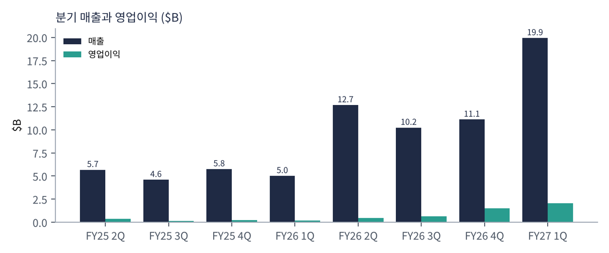
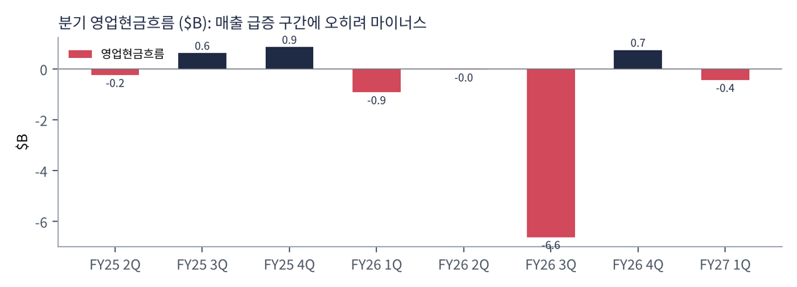
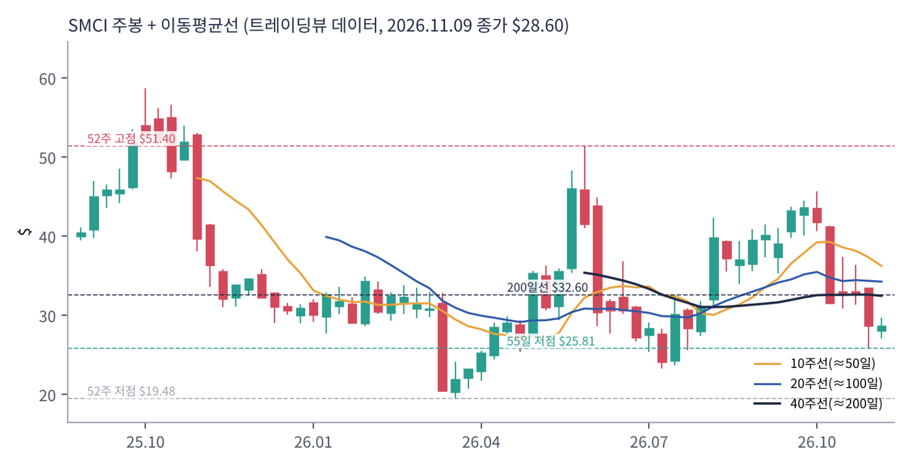
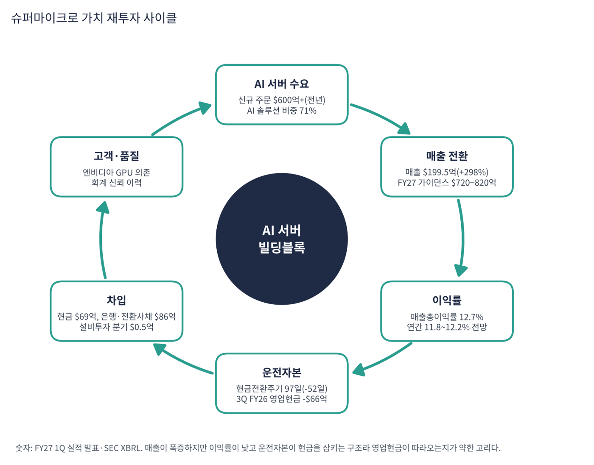

슈퍼마이크로는 엔비디아 GPU 등을 탑재한 서버와 AI 데이터센터 시스템을 설계·조립해 파는 회사다. 고객이 주문한 서버를 빠르게 맞춤 조립하는 '빌딩블록' 방식과 액체 냉각 기술이 강점이다. 최근에는 서버 한 대가 아니라 데이터센터 전체를 공급하는 DCBBS(데이터센터 빌딩 블록 솔루션)로 확장 중이다. FY27 1분기(2026년 7~9월) 매출이 $199.5억으로 가이던스(약 $150억)를 크게 넘었다.
| 항목 | 내용 |
|---|---|
| 종목 | Super Micro Computer, Inc. (SMCI) · NASDAQ · AI 서버 · 본사 캘리포니아주 새너제이 |
| 시가총액 | 약 $188억 · TTM PER 6.0배 · P/S 0.40배 · 11/9 종가 $28.60(-0.6%) |
| 최근 분기(FY27 1Q) | 매출 $199.5억(+298%, 전 분기 +79%), 매출총이익률 12.7%, 영업이익 $20.65억(10.4%), 순이익 $15.94억, EPS $1.75(비GAAP $1.81) |
| 가이던스 | 2Q 매출 $195~215억, 비GAAP EPS $1.66~1.90. FY27 매출 $720~820억(기존 $650~720억), 연간 매출총이익률 11.8~12.2% |
| 재무 | 현금 $69억, 은행 차입·전환사채 $86억, 현금전환주기 97일(전 분기보다 52일 단축) |
| 다음 실적 | FY27 2Q 실적: 2027년 2월 예정(확인 필요) |
| 직책 | 인물 | 역할·특징 |
|---|---|---|
| 창업자·회장 겸 CEO | 찰스 량 | 1993년 창업자. 빌딩블록 서버와 액체 냉각을 밀어붙이며 AI 서버 시장 점유를 키운 기술 중심 경영자 |
| CFO | 데이비드 와이간드 | 가이던스·매출총이익률·현금전환주기를 설명하는 재무 책임자 |
경영 스타일: '물량으로 승부하고 이익률은 나중에 개선한다'. 가이던스를 크게 웃도는 실적을 반복했고(FY27 1Q 가이던스 $145~155억 → 실적 $199.5억) 연간 가이던스도 중간값 기준 $85억 올렸다. 반면 매출총이익률은 17.5%(FY26 4Q) → 12.7%로 내려와 규모를 위해 이익률을 양보하는 면이 있다. 2024년 회계 감사인 사임과 연차보고서 지연 이력이 있어 재무 신뢰는 계속 확인 대상이다.
표준화된 부품을 조합해 고객 요구에 맞는 서버를 빠르게 만들고, 고발열 GPU 서버에 필요한 액체 냉각을 데이터센터 단위로 공급한다.
서버 한 대를 파는 회사에서 냉각·전력·네트워크까지 포함한 데이터센터 시스템 공급자로 올라가 이익률을 높이는 것이 목표다.
| 분기 | 매출 | 영업이익 | 영업이익률 | 순이익 | EPS | 영업현금 | 매출총이익률 | 특이 사항 |
|---|---|---|---|---|---|---|---|---|
| FY25 2Q | $56.8억 | $3.7억 | 6.5% | $3.2억 | 0.51 | -$2.4억 | 11.8% | |
| FY25 3Q | $46.0억 | $1.5억 | 3.2% | $1.1억 | 0.17 | $6.3억 | 9.6% | |
| FY25 4Q | $57.6억 | $2.3억 | 4.0% | $1.9억 | 0.33* | $8.6억 | 9.4% | |
| FY26 1Q | $50.2억 | $1.8억 | 3.6% | $1.7억 | 0.26 | -$9.2억 | 9.3% | |
| FY26 2Q | $127억 | $4.7억 | 3.7% | $4.0억 | 0.60 | -$0.2억 | 6.3% | |
| FY26 3Q | $102억 | $6.3억 | 6.1% | $4.8억 | 0.72 | -$66.2억 | 9.9% | 영업현금 -$66.2억(재고·채권 급증) |
| FY26 4Q | $111억 | $14.9억 | 13.4% | $11.8억 | 1.68* | $7.5억 | 17.5% | |
| FY27 1Q | $199억 | $20.6억 | 10.4% | $15.9억 | 1.75 | -$4.3억 | 12.7% | 매출 $199.5억(+298%), 가이던스 대폭 상회 |
EPS는 희석 주당순이익(GAAP, SEC 제출 자료 기준)이다. *는 4분기를 '연간 EPS − 1~3분기 합'으로 계산한 근사치라 실제 발표값과 다를 수 있다.


흐름 요약: 매출이 25.3Q $46.0억에서 FY27 1Q $199.5억으로 4.3배가 됐고 영업이익은 $1.47억에서 $20.65억으로 14배가 됐다. 그러나 매출총이익률은 9~18%에서 움직이며 최근 12.7%로 내려와 매출이 커져도 이익률이 따라 높아지지는 않는다. 영업현금은 FY26 3Q에 -$66.2억, FY27 1Q에 -$4.3억으로 매출 급증 구간에서 오히려 마이너스다. 재고와 매출채권이 매출보다 빨리 늘어난 결과다. 최근 4분기 FCF는 -$65.0억(트레이딩뷰)이다.
| 구분 | 내용 | 26.3Q 상황 |
|---|---|---|
| AI 솔루션 | GPU 서버, 랙 단위 시스템, 액체 냉각 | 매출의 71%(전 분기 59%) |
| 엔터프라이즈·채널 | 일반 서버·스토리지·네트워크 | FY26 4Q 기준 50%(그 전 분기 28%) |
| DCBBS | 데이터센터 전체 설계·공급(냉각·전력 포함) | 회사가 제시한 성장 방향 |
AI 솔루션 비중이 59%에서 71%로 한 분기에 올라 GPU 서버 쏠림이 심해졌다. 매출총이익률이 낮은 GPU 서버 비중이 높아질수록 전체 이익률은 12% 안팎에 머문다. 회사는 연간 매출의 80% 이상이 AI 관련이라고 제시한 바 있다. 부문별 매출 금액은 이번 수집에서 확인하지 못했다.
슈퍼마이크로가 가려는 곳은 엔비디아 GPU를 가장 빨리, 가장 효율적으로 데이터센터에 얹어 주는 시스템 공급자다. 서버를 파는 회사에서 냉각·전력·소프트웨어·서비스가 합쳐진 솔루션 회사로 올라가 마진을 높이려 한다.
| 축 | 내용 |
|---|---|
| 속도 | 빌딩블록 모듈화로 맞춤 서버를 빠르게 납품 |
| 수직 통합 | DCBBS로 데이터센터 단위 공급 |
| 생산 능력 | 미국·대만·네덜란드 생산 확대 |
| 고객 다변화 | 대기업·채널 비중 확대(FY26 4Q 50%) |

| 이동평균 | 값 | 종가 대비 | 해석 |
|---|---|---|---|
| 5일선 | $29.09 | -1.7% | |
| 20일선 | $32.76 | -12.7% | |
| 50일선 | $37.27 | -23.3% | |
| 100일선 | $34.24 | -16.5% | |
| 200일선 | $32.60 | -12.3% | $32.6, 회복 시 추세 전환 시도 |
11/9 종가 $28.60는 52주 고점 $51.40의 56% 수준, 52주 저점 $19.48 대비 +47%다. 1·3·6·12개월 수익률은 -32%·-9%·-15%·-29%. 연중 고점 $51.4에서 55일 저점 $25.8까지 내려왔고, 한 달 전 $41.9에서 -32% 하락한 상태다. 실적 발표(11/3) 직후 시간외 급등 보도가 있었지만 한 달 기준으로는 하락세다(원인은 이번 수집에서 확인하지 못함).
트레이딩뷰 차트에서 사용자가 직접 그린 작도는 포함하지 않았고, 이동평균·돈키언 등 지표는 일봉 데이터로 직접 계산했다.
| 규칙 | 기준 | 현재 값 | 신호 |
|---|---|---|---|
| 장기 추세 필터 | 종가 vs 200일선 | $28.60 < $32.60 | 매도 |
| 중장기 교차 | 50일선 vs 200일선 | $37.27 > $32.60 | 매수 |
| 단기 교차 | 20일선 vs 50일선 | $32.76 < $37.27 | 매도 |
| 돈키언 채널 | 55일 고가 $45.77 / 저가 $25.81 | 중간값 $35.79 아래 | 매도 |
| 1개월 모멘텀 | 21거래일 수익률 | -31.7% (기준 $41.85) | 매도 |
| 3개월 모멘텀 | 63거래일 수익률 | -9.5% (기준 $31.60) | 매도 |
| 6개월 모멘텀 | 126거래일 수익률 | -14.7% (기준 $33.52) | 매도 |
| 12개월 모멘텀 | 252거래일 수익률 | -29.1% (기준 $40.34) | 매도 |
| 종합 (8개 평균) | -0.75 | 강한 매도 |
해석: 점수 -0.75(강한 매도)로 8개 중 7개가 매도이고 50/200 교차만 매수다. 5일선($29.1)은 회복했지만 20일선($32.8)·200일선($32.6) 아래다. 14일 ATR $2.56 (9.0%).
| 가격 | 무엇이 바뀌나 | 의미 |
|---|---|---|
| $32.60 | 200일선 회복 시 장기 신호 매수 전환 | 점수 ±0.25 |
| $35.79 | 돈키언 중간값(55일 고·저점 평균) | 채널 신호 전환선 |
| $32.76 | 20일선 회복 시 단기 흐름 개선 | 단기 추세 신호 |
| $25.81 | 55일 저점 이탈 시 하락 추세 확정 | 손절 판단 기준 |
| 구분 | 가격 | 근거 |
|---|---|---|
| 저항 2 | $32.60 | 200일선 |
| 저항 1 | $29.09 | 5일선 |
| 지지 1 | $25.81 | 55일 저점 |
| 지지 2 | $19.48 | 52주 저점 |
PEG 0.02로 숫자는 싸지만 CTA는 -0.75다. $26~29에서 계획 금액의 30%씩 두 번(총 60%) 분할 매수하고 $32.8(20일·200일선 부근)을 넘기면 나머지를 추가한다(평균 약 $27.5, 손절 $24.5 기준 손익비 1:1.8~1:3.3). 1차 $32.8, 2차 $37.3(50일선)에서 익절한다. 55일 저점 $25.8 이탈 후 종가 $24.5 이하면 손절한다. 확인 신호는 2Q 매출 $195~215억, 매출총이익률 11.8% 이상, 현금전환주기 단축이다. 가격대는 내 시나리오이며 매매 권유가 아니다.
| 악재 요인 | 내용 | 강도 |
|---|---|---|
| 낮은 마진 | 매출총이익률 12.7%, 연간 11.8~12.2% 전망. 매출 증가가 이익으로 바로 연결되지 않음 | 높음 |
| 현금 흐름 | TTM FCF -$65.0억, 재고·채권 증가로 영업현금 마이너스 | 높음 |
| 엔비디아 의존·고객 집중 | GPU 공급과 대형 고객 주문에 매출이 크게 좌우 | 중간 |
| 회계 신뢰 이력 | 2024년 회계 감사인 사임·연차보고서 지연 | 중간 |
| 경쟁 | 델·HPE·대만 ODM과 가격 경쟁 | 중간 |
| 티커 | 회사 | 시가총액 | PER(TTM) | PEG | P/S | EPS 성장(YoY) |
|---|---|---|---|---|---|---|
| SMCI | 슈퍼마이크로 | $19B | 6.0배 | 0.02 | 0.40배 | +283% |
| DELL | 델 | $220B | 20.1배 | 0.12 | 1.42배 | +153% |
| NVDA | 엔비디아 | $4,306B | 22.6배 | 0.19 | 14.96배 | +125% |
| AMD | AMD | $834B | 110.5배 | 0.77 | 16.42배 | +127% |
| AVGO | 브로드컴 | $1,525B | 40.8배 | 0.37 | 16.11배 | +100% |
| MU | 마이크론 | $830B | 9.9배 | 0.01 | 5.94배 | +879% |
| WDC | 웨스턴디지털 | $108B | 11.3배 | 0.04 | 6.99배 | +275% |
EPS 성장률은 트레이딩뷰 TTM 값이다. HPE·레노버·폭스콘 등 서버 직접 경쟁사는 이번 수집에서 데이터를 확보하지 못했다.
비교 결론: 슈퍼마이크로 PER 6.0배는 델(20.1)·엔비디아(22.6)보다 훨씬 낮고 마이크론(9.9)보다도 낮다. PEG 0.02는 마이크론(0.01) 다음이다. '가장 싸지만 마진과 현금이 가장 약하고 신뢰 이력이 있는' 서버 회사다.
슈퍼마이크로는 이익이 나지만 현금이 마이너스인 기업이다. 그래서 운전자본이 현금을 얼마나 삼키는지와 이익률이 더 내려갈 때를 점검했다.
| 지표 | 값 | 계산·출처 | 해석 |
|---|---|---|---|
| 영업현금 (FY27 1Q) | -$4.34억 | SEC 분기 | 순이익 $15.9억과 괴리 |
| 잉여현금흐름 (TTM) | -$65.0억 | 트레이딩뷰 | 순이익(TTM $34~37억)과 반대 방향 |
| 현금 / 은행·전환사채 | $69억 / $86억 | 회사 발표 | 순부채 $17억. 트레이딩뷰 총부채는 $91.8억(리스 등 포함 가능) |
| 현금전환주기 | 97일 | 회사 콜 | 전 분기 대비 52일 단축. 개선 방향은 맞음 |
| 가정 | 영향 | 수치 (가정) | 의미 |
|---|---|---|---|
| 매출총이익률 12.7% → 10% | 분기 영업이익 -$5.4억 | EPS 약 -$0.46 (-26%) | 비GAAP 가이던스 $1.66~1.90 하단 이하 |
| 매출총이익률 12.7% → 8% | 분기 영업이익 -$9.4억 | EPS 약 -$0.79 (-45%) | FY26 1Q 이익률(9.3%)보다 낮은 수준 |
| 현금전환주기 +10일 | 현금 약 -$21.9억 | 연 매출 $800억 가정 | 현금 $69억의 32% 소모 |
적용 법인세·기타 비율 77%(영업이익→순이익 FY27 1Q 비율), 주식 수 약 9.1억 주(순이익 $15.94억 ÷ EPS $1.75)와 연 매출 $800억은 내 가정이다. 회사 전망이 아니다.
| 기준 | 매출 | P/S | 비고 |
|---|---|---|---|
| 트레이딩뷰 표시값 | – | 0.40배 | — |
| 최근 4분기(TTM) | $540억 | 0.35배 | 시총 $188억 ÷ $540억 |
| FY27 가이던스 중간값 | $770억 | 0.24배 | 회사 가이던스 |
| 동종 서버·AI | – | – | 델 1.4, 엔비디아 15.0, AMD 16.4, 마이크론 5.9 (11/9) |
해석: P/S 0.35배는 이번 비교 종목 중 가장 낮다. 이는 이익률이 낮은 조립 사업의 특성(영업이익률 8.6~10%)이며, 매출이 두 배가 돼도 가격이 같다면 P/S가 반으로 떨어질 뿐 싼 종목이라는 뜻은 아니다.
| 지표 | 값 | 판정 |
|---|---|---|
| EBITDA (TTM, 트레이딩뷰) | $47.5억 | 흑자 |
| EBITDA 마진 | 8.8% | $47.5억 ÷ $540억 |
| TTM 영업이익률 | 8.6% | SEC 합산 $46.5억 ÷ $540억 |
| 순부채 / EBITDA | 0.4배 | 순부채 $17억(회사 발표 기준) |
| EV/EBITDA | 약 4.3배 | (시총 $188억 + 순부채 $17억) ÷ $47.5억 |
| 방식 | PER | EPS 성장률 | PEG | 판정 |
|---|---|---|---|---|
| 트레이딩뷰 (TTM) | 6.0배 | +282.9% | 0.02 | 적극 매수 |
| 연환산 (비GAAP 1Q $1.81 × 4) | 3.9배 ($28.60 ÷ $7.24) | +25% 가정 | 0.16 | 적극 매수 |
| 보수적 (+10% 가정) | 3.9배 | +10% | 0.39 | 적극 매수 |
| 스트레스 (EPS -20% 가정) | 3.9배 | -20% | 해당 없음 | 해당 없음 |
판정: PEG 0.02 → '적극 매수' 기준(0.5 이하) 충족. 하지만 이 PEG는 낮은 마진·마이너스 현금흐름·회계 신뢰 문제 때문에 시장이 PER을 낮게 매기는 점을 반영한다. PER 4~6배는 이익이 지속되지 않을 가능성에 대한 할인이다. 연환산 EPS와 성장률 가정은 내 추정이며, 실제 가이던스는 2Q 비GAAP EPS $1.66~1.90(중간값 $1.78, 1Q 대비 소폭 감소)이다.

슈퍼마이크로 사이클은 AI 서버 수요 → 매출 → 이익 → 현금 → 재투자인데, 현금 고리가 막혀 있다.
| 고리 | 현재 숫자 | 고리 강도 | 약해지는 신호 |
|---|---|---|---|
| ① AI 서버 수요 | 신규 주문 $600억+(전년), AI 비중 71% | 강함 | 주문 둔화 |
| ② 매출 전환 | 매출 $199.5억(+298%) | 강함 | 2Q 가이던스 $195억 미달 |
| ③ 이익률 | 매출총이익률 12.7%(17.5%에서 하락) | 약함 | 10% 이하로 하락 |
| ④ 현금·운전자본 | TTM FCF -$65.0억, 현금전환주기 97일 | 약함 | 현금전환주기 재악화 |
| ⑤ 차입·재투자 | 은행·전환사채 $86억, 설비투자 분기 $0.5억 | 의존 | 차입 확대로 이자 부담 |
| ⑥ 신뢰·고객 | 엔비디아 의존, 2024년 회계 이슈 이력 | 주의 | 새 회계·공시 문제 |
이 사이클의 구조: 앞단(①②)은 강하고 뒷단(③④)은 약하다. 매출이 늘수록 선지급해야 할 재고와 채권이 커져 이익이 현금으로 바뀌지 않는다. 약한 고리는 ③·④·⑥이다.